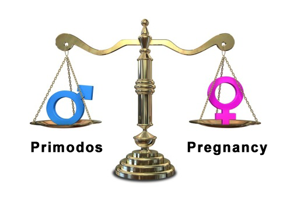

Our Fight for Justice
"We seek to uncover the truth about the failures of past Government Health Regulatory Authorities. 
We reveal the cover up by the drug companies Bayer/Schering and Sanofi/Roussel and expose the deliberate suppression of evidence by the current U.K. Regulators, the MHRA and Commission on Human Medicines".
Watch our videos and judge for yourself.